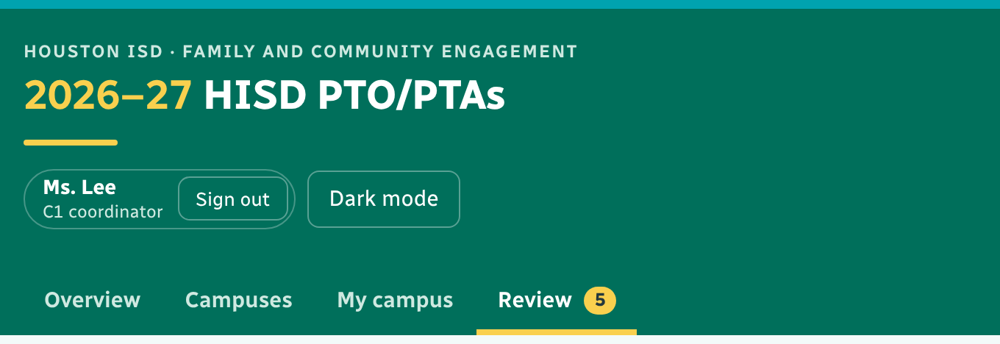
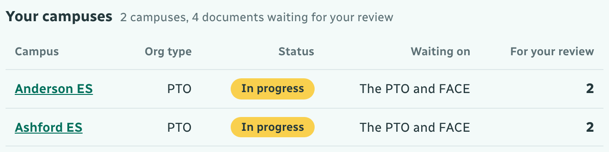
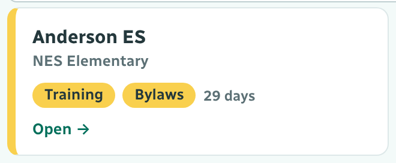
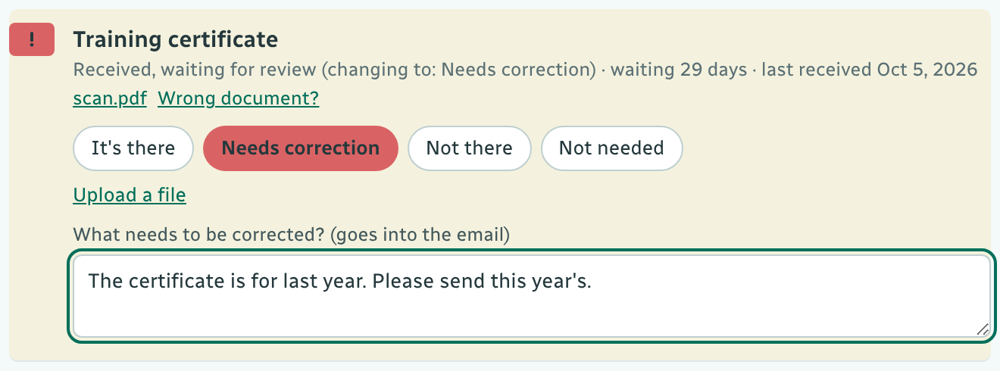
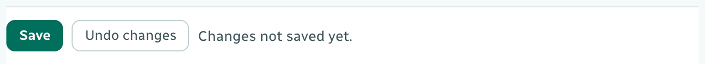
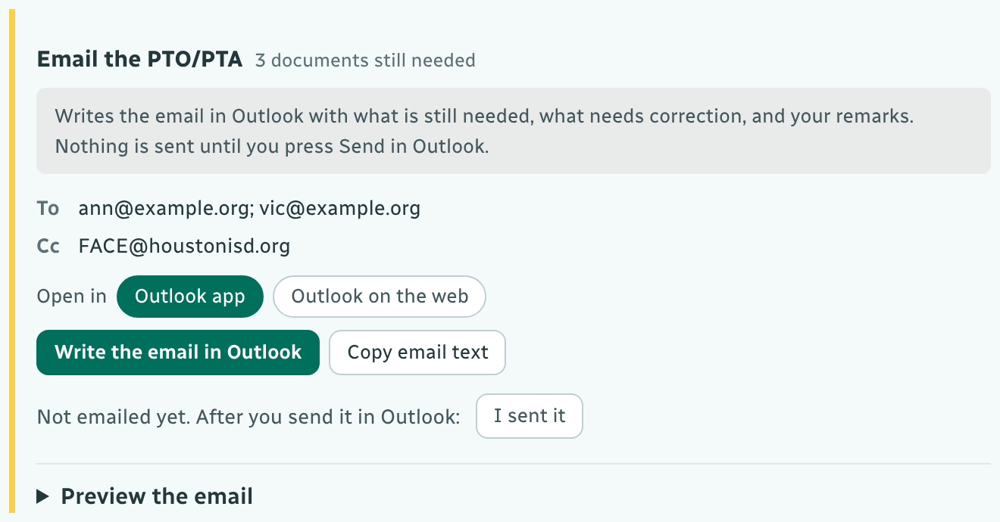

Open the dashboard link FACE sent you and bookmark it. You review the documents for your own campuses, and email the PTO/PTA when something is missing.
Click Sign in at the top right, pick your name and type your passcode. Your name then shows at the top and a Review tab appears (the number is what waits for you). Lost your passcode? Ask FACE. On a shared computer, click Sign out when you finish.

Open My campus. Your campuses lists each of your campuses with its status, who it is waiting on, and how many documents wait for your review. Click a campus name to see its card.

Open Review. Each of your campuses with documents waiting has a card, with the documents and how many days they have waited. Click Open →. The campus opens across the whole screen; ← Back returns you.

Click the file name to open it, then choose It's there, Needs correction (say what; it goes into the email), Not there or Not needed. Then press Save: nothing is saved until you do. Have the right file yourself? Upload a file. Filed under the wrong document? Wrong document?


On the campus, Email the PTO/PTA writes the email for you: what is still needed, what needs correction, and your remarks. It goes to the president and the secretary, with FACE@houstonisd.org copied.
Click Write the email in Outlook, read it and press Send in Outlook (it goes from your own email). Then, on the dashboard, click I sent it so everyone can see the campus was emailed.

✓ Accepted ◷ Waiting for your review ! Sent back to fix – Not received
Registered: training certificate, bylaws and officer form done. Eligible to Fundraise: all six done.
The officer form counts as soon as it comes in: nobody reviews it.
For a PTA, the bylaws, budget, 501(c) and bank boxes come from the weekly Texas PTA report.
Each weekday at 8 AM you get a reminder email if anything is waiting for you.
A red Flagged campus is paused while FACE reviews it. Questions: FACE@houstonisd.org.